7: Acid-base reactions
Contents
7: Acid-base reactions#

Helicobacter pylori
Credit: https://www.flickr.com/photos/ajc1/
The glass flask sitting on a bench in Dr. Barry Marshall’s lab in Perth, Western Australia, contained about thirty milliliters of a distinctly unappetizing murky, stinking yellowish liquid.
A few days earlier, Dr. Marshall, in consultation with his mentor and research partner Dr. J. Robin Warren, had poured a nutrient broth into the flask, then dropped in a small piece of tissue sample taken from the stomach of a patient suffering from chronic gastritis. Gastritis is an inflammation of the stomach lining characterized by lingering pain, nausea, and vomiting, and is often is the precursor to a peptic ulcer. Now, after several days of incubating in a warm water bath, the flask contained a living liquid culture, swarming with billions of bacterial cells. According to the medical textbooks lining Dr. Marshall’s bookshelves, the bacteria should not have been there – nothing should have grown in the broth, because the highly acidic environment inside the stomach was supposed to be sterile. Also according to the textbooks, the cause of his patient’s stomach ailment was stress, or perhaps a poor diet – but most definitely not a bacterial infection.
Dr. Marshall took a good, long, look at the contents of the flask. Then he gave it a final swirl, and drank it down.
Five days later, his stomach started to hurt.
This is the story of how two doctors dared to think what no one else had thought, and turned an established medical doctrine upside-down. Dr. J. Robin Warren was a pathologist at the Royal Perth Hospital in Perth, Western Australia. One day, when examining an image taken from a stomach biopsy from a patient with severe gastritis, he noticed what appeared to be spiral-shaped bacteria in the tissue, a surprising observation given the medical consensus that bacteria could not live in the stomach.
The microbe-like shapes were very hard to see, but when he tried treating the sample with a silver stain they became much more apparent. He decided to start looking at silver-stained sections of every stomach biopsy he examined, and before long he noticed a pattern: the presence of the spiral bacteria coincided with gastritis in the patient, and the tissues which were more severely inflamed seemed also to have more bacteria present. Could there be a causal link between the bacteria and the illness?
When he discussed his observations with colleagues, they dismissed the results as coincidental contamination – nothing important.
Warren wasn’t willing to just let it go. He was able to interest Barry Marshall, a young internal medicine resident training at the same hospital, in taking on a research project to try and solve the mystery of the bacteria that were not supposed to exist. Marshall started by doing a thorough search of the literature, and found that his mentor was not the first to report seeing spiral-shaped bacteria in stomach tissue – there were in fact several such observations in the literature, the oldest going back to the middle of the 19th century. All of them had been dismissed as unimportant artifacts.
Warren and Marshall started sending stomach biopsies from gastritis patients to the microbiology lab in the hospital, to see if bacteria from the samples could be cultured in a petri dish. For many months, they got nothing. Then one Tuesday morning, right after the four-day Easter holiday, Marshall got a call from an excited microbiology technician: he had neglected to dispose of the latest round of test cultures before going home for the holiday, and instead had left them in the incubator the whole time. After growing for a full five days, the dishes had colonies of bacteria growing in them. All this time, the technicians had been throwing the cultures away after two days when no bacterial growth was evident – standard procedure when working with other bacteria – but apparently these bacteria were especially slow-growing.
Now that he could culture the bacteria in the lab, he was able to isolate and study them in more detail, and gave them the name Helicobacter pylori. Marshall confirmed Warren’s earlier observation of a correlation between stomach bacteria and gastritis: only those patients suffering from gastritis or ulcers seemed to have the bacteria in their stomachs. There seemed to be strong evidence that H. pylori infection led to gastritis, which in turn lead eventually to stomach ulcers.
Despite the new data, Warren and Marshall’s colleagues in the gastroenterology field were still unconvinced of the link between bacteria and gastritis or ulcers. Scientists are inherently skeptical people, and it was difficult to overcome the long-entrenched theory that the stomach was sterile, and that ulcers were caused by stress. Interviewed much later by Discovery Magazine, Marshall recalled: “To gastroenterologists, the concept of a germ causing ulcers was like saying that the Earth is flat”.
Poring once more over the available literature, Marshall learned that acid-reducing drugs – an enormously profitable product– were able to relieve ulcer symptoms, but only temporarily. One interesting piece of information stood out to him, though: an over-the-counter antacid containing the element bismuth (similar the brand-name medicine Pepto-Bismol) provided much longer-lasting relief compared to the other drugs – and in some cases seemed to effect a permanent cure. Marshall soaked a small circle of filter paper in the bismuth medicine, and placed it on a petri dish that he had inoculated with H. pylori. After five days in the incubator, there was a clear circle of non-growth around the filter paper. The medicine had killed the bacteria.
Everything seemed to fit together: almost all patients with gastritis or ulcers had H. pylori infections, and a drug which was able to kill the bacteria was also effective against the stomach ailment. But to convince the medical community that the root cause of ulcers was H. pylori infection, Warren and Marshall needed more direct evidence: they had to show that a healthy stomach – free from gastritis and uninfected by H. pylori – would develop gastritis as a result of intentional infection, and that clearing up the infection would also cure the gastritis. They tried experiments with pigs first, then rats, and then mice, but to no avail – they were not able to induce an H. pylori infection in the animal models. Marshall was getting desperate: all around him he saw patients suffering terribly, getting only temporary relief from acid blockers and eventually needing to have parts of their stomachs removed, and he was convinced that simple antibiotic therapy would cure them if only their doctors could be convinced to try it. Because animal models had failed, he decided to move to a model system that he knew would work: humans. Ethical and regulatory considerations prevented him from intentionally infecting human volunteers - so his only option was to use himself as a guinea pig.
We are now at the point in the story where Barry Marshall, in the name of science and medicine, took his disgusting but undeniably courageous gulp of bacteria-laden broth. He had already undergone an endoscopy to ascertain that his stomach was free from both inflammation and H. pylori. As we already know, he started to develop symptoms of gastritis about five days after drinking the bacteria – the same amount of time that it took for H. pylori colonies to appear in the petri dish cultures. After a few more days, he underwent another endoscopy, and was overjoyed to be told that his stomach was indeed inflamed, and was infested with spiral-shaped bacteria. He initially wanted to carry on the experiment for a few more days of further tests, but his wife had a different opinion on the matter and convinced him to begin antibiotic treatment, which quickly cleared up both his infection and his stomach inflammation.
Marshall and Warren now had clear, direct evidence that the stomach inflammation which leads to ulcers was caused by bacteria, and could be cured with antibiotics. They submitted a summary of their results for presentation at a meeting of the Gastroenterological Society of Australia, but were rejected. Apparently, 67 submissions had come in and there was only time for 56 presentations; unfortunately their results were not considered important enough to make the cut. They persevered, and eventually published their findings in the June, 1984 issue of the British medical journal The Lancet.
The paper gained some notice, especially from microbiologists, but did not have an immediate impact in clinical practice. Around the world, gastroenterologists continued to treat ulcers with acid blockers. Outside of the mainstream medical community, however, word was getting out that two Australian doctors had a cure for ulcers, and more people started coming to them for treatment. Stories about Warren and Marshall appeared in places like Reader’s Digest and The National Enquirer, and eventually in the United States the National Institutes of Health and the Food and Drug Administration responded by fast-tracking the clinical testing and approval process, and publicizing the new treatment option.
Stomach ulcers, which have been tormenting human beings since the beginning of recorded history, are today considered an easily curable condition, and the idea that they are caused by H. pylori infection is fully accepted by the medical community. Drs. J. Robin Warren and Barry Marshall shared the 2005 Nobel Prize in Medicine.
The now-discredited idea that the stomach is a sterile place made perfectly good biochemical sense at the time: the stomach is like a bathtub full of hydrochloric acid, which you probably recall from previous chemistry classes and labs is a very strong, dangerously corrosive acid. It is very difficult to imagine how a microbe could survive in such an environment. We now know that H. pylori can thrive there in part because its spiral shape allows it to burrow deep into the protective layer of mucus that coats the stomach wall. In addition, H. pylori cells produce large amounts of an enzyme called urease, which catalyzes a reaction between urea and water to form carbon dioxide and ammonia.

fig 1a
Ammonia - the main component of window-washing liquid - is a fairly strong base, and reacts rapidly and completely with hydrochloric acid to neutralize it.
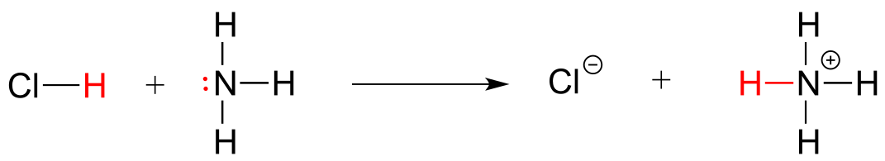
fig1b
Although scientists are still unsure of all the details, it is likely that these two protective strategies used by H. pylori somehow play a role in causing the inflammation that can lead to peptic ulcers, where the stomach lining becomes exposed to the harsh action of hydrochloric acid.
The idea of acidity is at the heart of our story about the discovery of H. pylori, and is the subject of this chapter. From here on in our study of organic chemistry, we will be learning about how organic molecules react, and how their structure determines their reactivity. The reaction between an acid and a base - where a proton is donated from the former and accepted by the latter - is the first kind of organic reaction that we will explore. After reviewing some basic ideas about acid-base equilibria with which you are probably already familiar from General Chemistry, we will dive into some very challenging new waters, as we attempt to use our understanding of organic structure to predict how different organic functional groups will react in an acid-base context. Many of the ideas that are introduced in this chapter, though perhaps difficult to grasp at first, will be crucial to understanding not only acid base chemistry but all of the other organic reaction types that we will see throughout the remainder of the book.
Additional reading:
Discover Magazine, March 7, 2010. The Dr. Who Drank Infectious Broth, Gave Himself an Ulcer, and Solved a Medical Mystery
Section 7.1: Overview of acid-base reactions#
7.1A: The Brønsted-Lowry definition of acidity and basicity#
We’ll begin our discussion of acid-base chemistry with a couple of essential definitions. The first of these was proposed in 1923 by the Danish chemist Johannes Brønsted and the English chemist Thomas Lowry, and has come to be known as the Brønsted-Lowry definition of acidity and basicity. An acid, by the Brønsted-Lowry definition, is a species which acts as a proton donor, while a base is a proton acceptor. We have already discussed in the previous chapter one of the most familiar examples of a Brønsted-Lowry acid-base reaction, between hydrochloric acid and hydroxide ion:
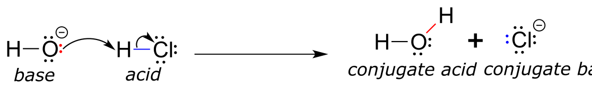
fig 1
In this reaction, a proton is transferred from HCl (the acid, or proton donor) to hydroxide ion (the base, or proton acceptor). As we learned in the previous chapter, curved arrows depict the movement of electrons in this bond-breaking and bond-forming process.
After a Brønsted-Lowry acid donates a proton, what remains is called the conjugate base. Chloride ion is thus the conjugate base of hydrochloric acid. Conversely, when a Brønsted-Lowry base accepts a proton it is converted into its conjugate acid form: water is thus the conjugate acid of hydroxide ion.
Here is an organic acid-base reaction, between acetic acid and methylamine:

fig 2
In the reverse of this reaction, acetate ion is the base and methylammonium ion (protonated methylamine) is the acid.
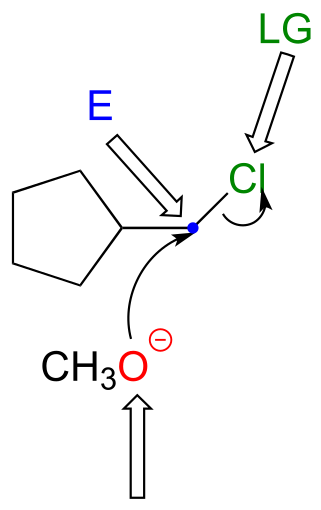fig 2
What makes a compound acidic (likely to donate a proton) or basic (likely to accept a proton)? Answering that question is one of our main jobs in this chapter, and will require us to put to use much of what we learned about organic structure in the first two chapters, as well as the ideas about thermodynamics that we reviewed in chapter 6.
For now, let’s just consider one common property of bases: in order to act as a base, a molecule must have a reactive pair of electrons. In all of the acid-base reactions we’ll see in this chapter, the basic species has an atom with a lone pair of electrons. When methylamine acts as a base, for example, the lone pair of electrons on the nitrogen atom is used to form a new bond to a proton.
Clearly, methylammonium ion cannot act as a base – it does not have a reactive pair of electrons with which to accept a proton.
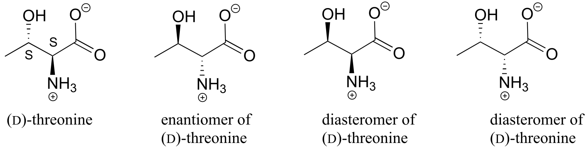fig 3
Later, in chapter 14, we will study reactions in which a pair of electrons in a π bond of an alkene or aromatic ring act in a basic fashion - but for now, will concentrate on the basicity of non-bonding (lone pair) electrons.
Exercise 7.1: Complete the reactions below - in other words, draw structures for the missing conjugate acids and conjugate bases that result from the curved arrows provided.

fig 4
7.1B: The Lewis definition of acidity and basicity#
The Brønsted-Lowry picture of acids and bases as proton donors and acceptors is not the only definition in common use. A broader definition is provided by the Lewis definition of acidity and basicity, in which a Lewis acid is an electron-pair acceptor and a Lewis base is an electron-pair donor. This definition covers Brønsted-Lowry proton transfer reactions, but also includes reactions in which no proton transfer is involved. The interaction between a magnesium cation (Mg+2) and a carbonyl oxygen is a common example of a Lewis acid-base reaction in enzyme-catalyzed biological reactions. The carbonyl oxygen (the Lewis base) donates a pair of electrons to the magnesium cation (the Lewis acid).

fig 5
While it is important to be familiar with the Lewis definition of acidity, the focus throughout the remainder of this chapter will be on acid-base reactions of the (proton-transferring) Brønsted-Lowry type.
Section 7.2: The acidity constant#
7.2A: Defining the acidity constant#
You are no doubt aware that some acids are stronger than others. The relative acidity of different compounds or functional groups – in other words, their relative capacity to donate a proton to a common base under identical conditions – is quantified by a number called the acidity constant, abbreviated Ka. The common base chosen for comparison is water.
We will consider acetic acid as our first example. If we make a dilute solution of acetic acid in water, an acid-base reaction occurs between the acid (proton donor) and water (proton acceptor).

fig 7
Acetic acid is a weak acid, so the equilibrium favors reactants over products - it is thermodynamically ‘uphill’. This is indicated in the figure above by the relative length of the forward and reverse reaction arrows.

fig 7a
The equilibrium constant Keq is defined as:
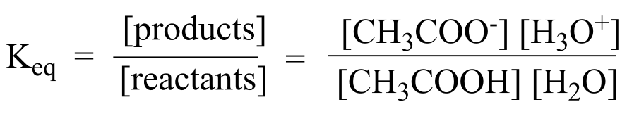
fig 8
Remember that this is a dilute aqueous solution: we added a small amount of acetic acid to a large amount of water. Therefore, in the course of the reaction, the concentration of water (approximately 55.6 mol/L) changes very little, and can be treated as a constant.
If we move the constant term for the concentration of water to the left side of the equilibrium constant expression, we get the expression for Ka, the acid constant for acetic acid:

fig 9
In more general terms, the dissociation constant for a given acid HA or HB+ is expressed as:

fig 10
The value of Ka for acetic acid is 1.75 x 10-5 - much less than 1, indicating there is much more acetic acid in solution at equilibrium than acetate and hydronium ions.
Conversely, sulfuric acid, with a Ka of approximately 109, or hydrochloric acid, with a Ka of approximately 107, both undergo essentially complete dissociation in water: they are very strong acids.
A number like 1.75 x 10- 5 is not very easy either to say, remember, or visualize, so chemists usually use a more convenient term to express relative acidity. The pKa value of an acid is simply the log (base 10) of its Ka value.
pKa = -log Ka Ka = 10-pKa
Doing the math, we find that the pKa of acetic acid is 4.8. The pKa of sulfuric acid is
-10, and of hydrochloric acid is -7. The use of pKa values allows us to express the relative acidity of common compounds and functional groups on a numerical scale of about –10 (for a very strong acid) to 50 (for a compound that is not acidic at all). The lower the pKa value, the stronger the acid.
The ionizable (proton donating or accepting) functional groups relevant to biological organic chemistry generally have pKa values ranging from about 5 to about 20. The most important of these are summarized below, with very rough pKa values for the conjugate acid forms. More acidic groups with pKa values near zero are also included for reference.
Typical pKa values
group approximate pKa
hydronium ion (H3O+) 0
protonated alcohol 0
protonated carbonyl 0
carboxylic acids 5
protonated imines 7
protonated amines 10
phenols 10
thiols 10
alcohols, water 15
α-carbon acids * 20
*α-carbon acids will be explained in section 7.6A
It is highly recommended to commit these rough values to memory now - then if you need a more precise value, you can always look it up in a more complete pKa table. The appendix to this book contains a more detailed table of typical pKa values, and much more complete tables are available in resources such as the Handbook of Chemistry and Physics.
**
**
pKa vs. pH
It is important to realize that pKa is not the same thing as pH: the former is an inherent property of a compound or functional group, while the latter is a measure of hydronium ion concentration in a given aqueous solution:
pH = -log [H3O+]
Knowing pKa values not only allows us to compare acid strength, it also allows us to compare base strength. The key idea to remember is this: the stronger the conjugate acid, the weaker the conjugate base. We can determine that hydroxide ion is a stronger base than ammonia (NH3), because ammonium ion (NH4+, pKa = 9.2) is a stronger acid than water (pKa = 15.7).
Exercise 7.2: Which is the stronger base, CH3O- or CH3S-? Acetate ion or ammonia? Hydroxide ion or acetate ion?
Let’s put our understanding of the pKa concept to use in the context of a more complex molecule. For example, what is the pKa of the compound below?
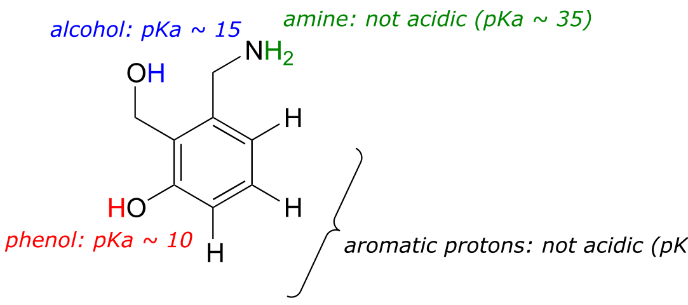
fig 11
We need to evaluate the potential acidity of four different types of protons on the molecule, and find the most acidic one. The aromatic protons are not all acidic - their pKa is about 45. The amine group is also not acidic, its pKa is about 35. (Remember, uncharged amines are basic: it is positively-charged protonated amines, with pKa values around 10, that are weakly acidic.) The alcohol proton has a pKa of about 15, and the phenol proton has a pKa of about 10: thus, the most acidic group on the molecule above is the phenol. (Be sure that you can recognize the difference between a phenol and an alcohol - remember, in a phenol the OH group is bound directly to the aromatic ring). If this molecule were to react with one molar equivalent of a strong base such as sodium hydroxide, it is the phenol proton which would be donated to form a phenolate anion.
Exercise 7.3: Identify the most acidic functional group on each of the molecules below, and give its approximate pKa.

fig 12
7.2B: Using pKa values to predict reaction equilibria#
By definition, the pKa value tells us the extent to which an acid will react with water as the base, but by extension we can also calculate the equilibrium constant for a reaction between any acid-base pair. Mathematically, it can be shown that:
Keq = 10∆pKa
where ∆pKa = (pKa of product acid minus pKa of reactant acid)
Consider a reaction between methylamine and acetic acid:

fig 13
The first step is to identify the acid species on either side of the equation, and look up or estimate their pKa values. On the left side, the acid is of course acetic acid while on the right side the acid is methyl ammonium ion (in other words, methyl ammonium ion is the acid in the reaction going from right to left). We can look up the precise pKa values in table 7 (at the back of the book), but we already know (because we have this information memorized, right?!) that the pKa of acetic acids is about 5, and methyl ammonium is about 10. More precise values are 4.8 and 10.6, respectively.
Without performing any calculations at all, you should be able to see that this equilibrium lies far to the right-hand side: acetic acid has a lower pKa, meaning it is a stronger acid than methyl ammonium, and thus it wants to give up its proton more than methyl ammonium does. Doing the math, we see that
Keq = 10∆pKa = 10(10.6 – 4.8) = 105.8 = 6.3 x 105
So Keq is a very large number (much greater than 1) and the equilibrium for the reaction between acetic acid and methylamine lies far to the right-hand side of the equation, just as we had predicted. This also tells us that the reaction has a negative Gibbs free energy change, and is thermodynamically favorable.

fig 13b
If you had just wanted to quickly approximate the value of Keq without benefit of precise pKa information or a calculator, you could have approximated pKa ~ 5 (for the carboxylic acid) and pKa ~10 (for the ammonium ion) and calculated in your head that the equilibrium constant should be somewhere in the order of 105.
Exercise 7.4 Show the products of the following acid-base reactions, and roughly estimate the value of Keq.
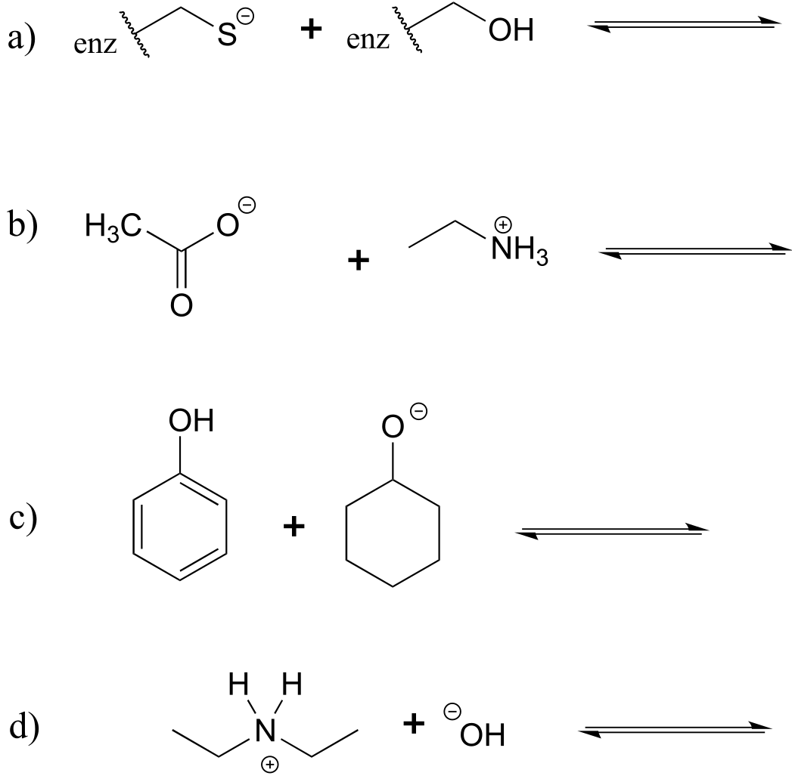fig 14
7.2C: Organic molecules in buffered solution: the Henderson-Hasselbalch equation#
The environment inside a living cell, where most biochemical reactions take place, is an aqueous buffer with pH ~ 7. Recall from your General Chemistry course that a buffer is a solution of a weak acid and its conjugate base. The key equation for working with buffers is the Henderson-Hasselbalch equation:
The Henderson-Hasselbalch equation

fig 15
The equation tells us that if our buffer is an equimolar solution of a weak acid and its conjugate base, the pH of the buffer will equal the pKa of the acid (because the log of 1 is equal to zero). If there is more of the acid form than the base, then of course the pH of the buffer is lower than the pKa of the acid.
Exercise 7.5: What is the pH of an aqueous buffer solution that is 30 mM in acetic acid and 40 mM in sodium acetate? The pKa of acetic acid is 4.8.
The Henderson-Hasselbalch equation is particularly useful when we want to think about the protonation state of different biomolecule functional groups in a pH 7 buffer. When we do this, we are always assuming that the concentration of the biomolecule is small compared to the concentration of the buffer components. (The actual composition of physiological buffer is complex, but it is primarily based on phosphoric and carbonic acids).
Imagine an aspartic acid residue located on the surface of a protein in a human cell. Being on the surface, the side chain is in full contact with the pH 7 buffer surrounding the protein. In what state is the side chain functional group: the protonated state (a carboxylic acid) or the deprotonated state (a carboxylate ion)? Using the Henderson-Hasselbalch equation, we fill in our values for the pH of the buffer and a rough pKa approximation of pKa = 5 for the carboxylic acid functional group. Doing the math, we find that the ratio of carboxylate to carboxylic acid is about 100 to 1: the carboxylic acid is almost completely ionized (in the deprotonated state) inside the cell. This result extends to all other carboxylic acid groups you might find on natural biomolecules or drug molecules: in the physiological environment, carboxylic acids are almost completely deprotonated.
Now, let’s use the equation again, this time for an amine functional group, such as the side chain of a lysine residue: inside a cell, are we likely to see a neutral amine (R-NH2) or an ammonium cation (R-NH3+?) Using the equation with pH = 7 (for the biological buffer) and pKa = 10 (for the ammonium group), we find that the ratio of neutral amine to ammonium cation is about 1 to 100: the group is close to completely protonated inside the cell, so we will see R-NH3+, not R-NH2.
We can do the same rough calculation for other common functional groups found in biomolecules.
At physiological pH:
Carboxylic acids are deprotonated (in the carboxylate anion form)
Amines are protonated (in the ammonium cation form)
Thiols, phenols, alcohols, and amides are uncharged
Imines are a mixture of the protonated (cationic) and deprotonated (neutral) states.
We will talk about the physiological protonation state of phosphate groups in chapter 9.
Exercise 7.6: The molecule below is not drawn in the protonation state that we would expect to see it at physiological pH. Redraw it in the physiologically relevant protonation state.

fig 16
While we are most interested in the state of molecules at pH 7, the Henderson-Hasselbalch equation can of course be used to determine the protonation state of functional groups in solutions buffered to other pH levels. The exercises below provide some practice in this type of calculation.
Exercise 7.7: What is the ratio of acetate ion to neutral acetic acid when a small amount of acetic acid (pKa = 4.8) is dissolved in a buffer of pH 2.8? pH 3.8? pH 4.8? pH 5.8? pH 6.8?
Exercise 7.8: Would you expect phenol to be soluble in an aqueous solution buffered to pH 2? pH 7? pH 12? Explain your answer.
Exercise 7.9: Methylamine is dissolved in a pH 9.0 buffer. What percent of the solute molecules are charged? What is the average charge on solute molecules?
Exercise 7.10: What is the approximate net charge on a tetrapeptide Cys-Asp-Lys-Glu in pH 7 buffer?
Section 7.3: Structural effects on acidity and basicity#
Now that we know how to quantify the strength of an acid or base, our next job is to gain an understanding of the fundamental reasons behind why one compound is more acidic or more basic than another. This is a big step: we are, for the first time, taking our knowledge of organic structure and applying it to a question of organic reactivity. Many of the ideas that we’ll see for the first here will continue to apply throughout the book as we tackle many other organic reaction types.
7.3A: Periodic trends#
First, we will focus on individual atoms, and think about trends associated with the position of an element on the periodic table. We’ll use as our first models the simple organic compounds ethane, methylamine, and ethanol, but the concepts apply equally to more complex biomolecules with the same functionalities, for example the side chains of the amino acids alanine (alkane), lysine (amine), and serine (alcohol).
**
**
Horizontal periodic trend in acidity and basicity

fig 17
We can see a clear trend in acidity as we move from left to right along the second row of the periodic table from carbon to nitrogen to oxygen. The key to understanding this trend is to consider the hypothetical conjugate base in each case*: the more stable (weaker) the conjugate base, the stronger the acid*. Look at where the negative charge ends up in each conjugate base. In the conjugate base of ethane, the negative charge is borne by a carbon atom, while on the conjugate base of methylamine and ethanol the negative charge is located on a nitrogen and an oxygen, respectively. Remember from section 2.4A that electronegativity also increases as we move from left to right along a row of the periodic table, meaning that oxygen is the most electronegative of the three atoms, and carbon the least.
The more electronegative an atom, the better able it is to bear a negative charge. Weaker bases have negative charges on more electronegative atoms; stronger bases have negative charges on less electronegative atoms.
Thus, the methoxide anion is the most stable (lowest energy, least basic) of the three conjugate bases, and the ethyl carbanion anion is the least stable (highest energy, most basic). Conversely, ethanol is the strongest acid, and ethane the weakest acid.
When moving vertically within a given column of the periodic table, we again observe a clear periodic trend in acidity. This is best illustrated with the haloacids and halides: basicity, like electronegativity, increases as we move up the column.
**
**
Vertical periodic trend in acidity and basicity
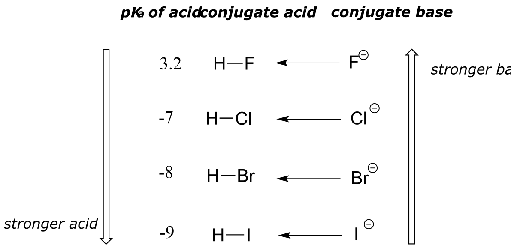
fig 18
Conversely, acidity in the haloacids increases as we move down the column.
In order to make sense of this trend, we will once again consider the stability of the conjugate bases. Because fluorine is the most electronegative halogen element, we might expect fluoride to also be the least basic halogen ion. But in fact, it is the least stable, and the most basic! It turns out that when moving vertically in the periodic table, the size of the atom trumps its electronegativity with regard to basicity. The atomic radius of iodine is approximately twice that of fluorine, so in an iodide ion, the negative charge is spread out over a significantly larger volume:
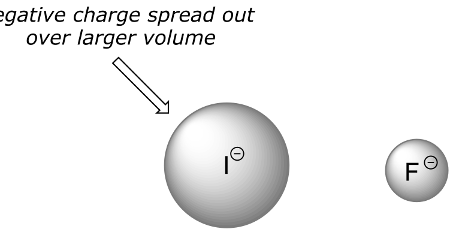
fig 19
This illustrates a fundamental concept in organic chemistry:
Electrostatic charges, whether positive or negative, are more stable when they are ‘spread out’ over a larger area.
We will see this idea expressed again and again throughout our study of organic reactivity, in many different contexts. For now, we are applying the concept only to the influence of atomic radius on base strength. Because fluoride is the least stable (most basic) of the halide conjugate bases, HF is the least acidic of the haloacids, only slightly stronger than a carboxylic acid. HI, with a pKa of about -9, is almost as strong as sulfuric acid.
More importantly to the study of biological organic chemistry, this trend tells us that thiols are more acidic than alcohols. The pKa of the thiol group on the cysteine side chain, for example, is approximately 8.3, while the pKa for the alcohol group on the serine side chain is on the order of 17.
Remember the concept of ‘driving force’ that was introduced in section 6.2A? Recall that the driving force for a reaction is usually based on two factors: relative charge stability, and relative total bond energy. Let’s see how this applies to a simple acid-base reaction between hydrochloric acid and fluoride ion:
HCl + F- → HF + Cl-
We know that HCl (pKa -7) is a stronger acid than HF (pKa 3.2), so the equilibrium for the reaction lies on the product side: the reaction is exergonic, and a ‘driving force’ pushes reactant to product.
What explains this driving force? Consider first the charge factor: as we just learned, chloride ion (on the product side) is more stable than fluoride ion (on the reactant side). This partially accounts for the driving force going from reactant to product in this reaction: we are going from less stable ion to a more stable ion.
What about total bond energy, the other factor in driving force? If you consult a table of bond energies, you will see that the H-F bond on the product side is more energetic (stronger) than the H-Cl bond on the reactant side: 570 kJ/mol vs 432 kJ/mol, respectively). This also contributes to the driving force: we are moving from a weaker (less stable) bond to a stronger (more stable) bond.
7.3B: Resonance effects#
In the previous section we focused our attention on periodic trends - the differences in acidity and basicity between groups where the exchangeable proton was bound to different elements. Now, it is time to think about how the structure of different organic groups contributes to their relative acidity or basicity, even when we are talking about the same element acting as the proton donor/acceptor. The first model pair we will consider is ethanol and acetic acid, but the conclusions we reach will be equally valid for all alcohol and carboxylic acid groups.
Despite the fact that they are both oxygen acids, the pKa values of ethanol and acetic acid are strikingly different. What makes a carboxylic acid so much more acidic than an alcohol? As before, we begin by considering the stability of the conjugate bases, remembering that a more stable (weaker) conjugate base corresponds to a stronger acid.

fig 20
In both species, the negative charge on the conjugate base is located on oxygen, so periodic trends cannot be invoked. For acetic acid, however, there is a key difference: two resonance contributors can be drawn for the conjugate base, and the negative charge can be delocalized (shared) over two oxygen atoms. In the ethoxide ion, by contrast, the negative charge is localized, or ‘locked’ on the single oxygen – it has nowhere else to go. This makes the ethoxide ion much less stable.
Recall the important general statement that we made a little earlier: ‘Electrostatic charges, whether positive or negative, are more stable when they are ‘spread out’ than when they are confined to one location.’ Now, we are seeing this concept in another context, where a charge is being ‘spread out’ (in other words, delocalized) by resonance, rather than simply by the size of the atom involved.
The delocalization of charge by resonance has a very powerful effect on the reactivity of organic molecules, enough to account for the difference of over 12 pKa units between ethanol and acetic acid (and remember, pKa is a log expression, so we are talking about a factor of 1012 between the Ka values for the two molecules!)
The resonance effect also nicely explains why a nitrogen atom is basic when it is in an amine, but not basic when it is part of an amide group. Recall that in an amide, there is significant double-bond character to the carbon-nitrogen bond, due to a minor but still important resonance contributor in which the nitrogen lone pair is part of a π bond.
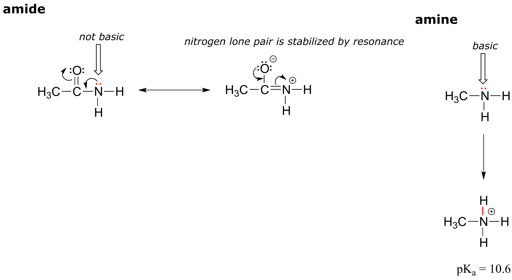
fig 21
Whereas the lone pair of an amine nitrogen is ‘stuck’ in one place, the lone pair on an amide nitrogen is delocalized by resonance. Notice that in this case, we are extending our central statement to say that electron density – in the form of a lone pair – is stabilized by resonance delocalization, even though there is not a negative charge involved. Here’s another way to think about it: the lone pair on an amide nitrogen is not available for bonding with a proton – these two electrons are too ‘comfortable’ being part of the delocalized π-bonding system. The lone pair on an amine nitrogen, by contrast, is not so comfortable - it is not part of a delocalized π system, and is available to form a bond with any acidic proton that might be nearby.
If an amide group is protonated, it will be at the oxygen rather than the nitrogen.
Exercise 7.11:
a) Draw the Lewis structure of nitric acid, HNO3.
b) Nitric acid is a strong acid - it has a pKa of -1.4. Make a structural argument to account for its strength. Your answer should involve the structure of the conjugate base of nitric acid.
Exercise 7.12: Rank the compounds below from most acidic to least acidic, and explain your reasoning.

fig 22
Exercise 7.13 (challenging): Often it requires some careful thought to predict the most acidic proton on a molecule. Ascorbic acid, also known as Vitamin C, has a pKa of 4.1 - the fact that this is in the range of carboxylic acids suggest to us that the negative charge on the conjugate base can be delocalized by resonance to two oxygen atoms. Which if the four OH protons on the molecule is most acidic? Draw the structure of ascorbate, the conjugate base of ascorbic acid, then draw a second resonance contributor showing how the negative charge is delocalized to a second oxygen atom. Hint - try deprotonating each OH group in turn, then use your resonance drawing skills to figure out whether or not delocalization of charge can occur.

fig 23
7.3C: Inductive effects#
Compare the pKa values of acetic acid and its mono-, di-, and tri-chlorinated derivatives:

fig 24
The presence of the chlorine atoms clearly increases the acidity of the carboxylic acid group, but the argument here does not have to do with resonance delocalization, because no additional resonance contributors can be drawn for the chlorinated molecules. Rather, the explanation for this phenomenon involves something called the inductive effect. A chlorine atom is more electronegative than a hydrogen, and thus is able to ‘induce’, or ‘pull’ electron density towards itself, away from the carboxylate group. In effect, the chlorine atoms are helping to further spread out the electron density of the conjugate base, which as we know has a stabilizing effect. In this context, the chlorine substituent can be referred to as an electron-withdrawing group. Notice that the pKa-lowering effect of each chlorine atom, while significant, is not as dramatic as the delocalizing resonance effect illustrated by the difference in pKa values between an alcohol and a carboxylic acid. In general, resonance effects are more powerful than inductive effects.
Because the inductive effect depends on electronegativity, fluorine substituents have a more pronounced pKa-lowered effect than chlorine substituents.

fig 25
In addition, the inductive takes place through covalent bonds, and its influence decreases markedly with distance – thus a chlorine two carbons away from a carboxylic acid group has a decreased effect compared to a chlorine just one carbon away.

fig 26
Exercise 7.14: Rank the compounds below from most acidic to least acidic, and explain your reasoning.

fig 27
Section 7.4: Acid-base properties of phenols#
Resonance effects involving aromatic structures can have a dramatic influence on acidity and basicity. Notice, for example, the difference in acidity between phenol and cyclohexanol.

fig 28
Looking at the conjugate base of phenol, we see that the negative charge can be delocalized by resonance to three different carbons on the aromatic ring.

fig 29
Although these are all minor resonance contributors (negative charge is placed on a carbon rather than the more electronegative oxygen), they nonetheless have a significant effect on the acidity of the phenolic proton. Essentially, the benzene ring is acting as an electron-withdrawing group by resonance.
As we begin to study in detail the mechanisms of biological organic reactions, we’ll see that the phenol side chain of the amino acid tyrosine (see table 5 at the back of the book), with its relatively acidic pKa of 9-10, often acts as a catalytic proton donor/acceptor in enzyme active sites.
Exercise 7.15: Draw the conjugate base of 2-napthol (the major resonance contributor), and on your drawing indicate with arrows all of the atoms to which the negative charge can be delocalized by resonance.

fig 30
The base-stabilizing effect of an aromatic ring can be accentuated by the presence of an additional electron-withdrawing substituent, such as a carbonyl. For the conjugate base of the phenol derivative below, an additional resonance contributor can be drawn in which the negative formal charge is placed on the carbonyl oxygen.
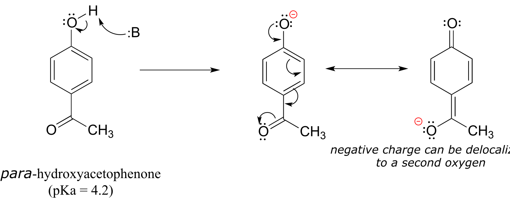fig 31
Now the negative charge on the conjugate base can be spread out over two oxygens (in addition to three aromatic carbons). The phenol acid therefore has a pKa similar to that of a carboxylic acid, where the negative charge on the conjugate base is also delocalized to two oxygen atoms. The ketone group is acting as an electron withdrawing group - it is ‘pulling’ electron density towards itself, through both inductive and resonance effects.
Exercise 7.16: The position of the electron-withdrawing substituent relative to the phenol hydroxyl is very important in terms of its effect on acidity. Which of the two substituted phenols below is more acidic? Use resonance drawings to explain your answer.
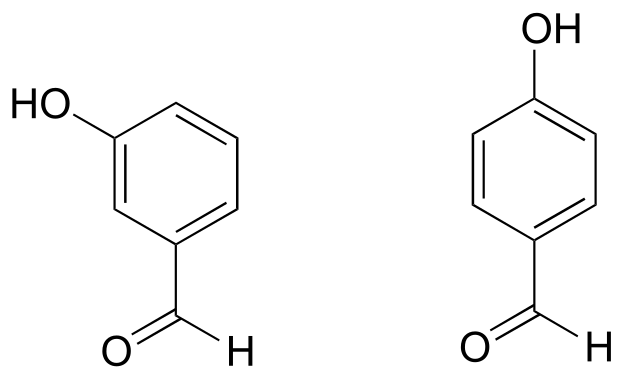
fig 32a
Exercise 7.17: Rank the four compounds below from most acidic to least.

fig 32
Exercise 7.18: Nitro groups are very powerful electron-withdrawing groups. The phenol derivative picric acid has a pKa of 0.25, lower than that of trifluoroacetic acid.

Use a resonance argument to explain why picric acid has such a low pKa.
Consider the acidity of 4-methoxyphenol, compared to phenol.

fig 34
Notice that the methoxy group increases the pKa of the phenol group - it makes it less acidic. Why is this? At first inspection, you might assume that the methoxy substituent, with its electronegative oxygen, would be an electron-withdrawing group by induction. That is correct, but only to a point. The oxygen atom does indeed exert an electron-withdrawing inductive effect, but the lone pairs on the oxygen cause the exact opposite effect – the methoxy group is an electron-donating group by resonance. A resonance contributor can be drawn in which a formal negative charge is placed on the carbon adjacent to the negatively-charged phenolate oxygen.

fig 35
Because of like-charge repulsion, this destabilizes the negative charge on the phenolate oxygen, making it more basic. It may help to visualize the methoxy group ‘pushing’ electrons towards the lone pair electrons of the phenolate oxygen, causing them to be less ‘comfortable’ and more reactive.
When resonance and induction compete, resonance usually wins!
The example above is a somewhat confusing but quite common situation in organic chemistry - a functional group, in this case a methoxy group, is exerting both an inductive effect and a resonance effect, but in opposite directions (the inductive effect is electron-withdrawing, the resonance effect is electron-donating). As stated earlier, as a general rule a resonance effect is more powerful than an inductive effect - so overall, the methoxy group is acting as an electron donating group.
Exercise 7.19: Rank the three compounds below from lowest pKa to highest, and explain your reasoning. Hint - think about both resonance and inductive effects!
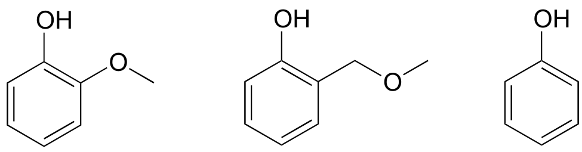
f ig 36
Section 7.5: Acid-base properties of nitrogen-containing functional groups#
Many of the acid-base reactions we will see throughout our study of biological organic chemistry involve functional groups which contain nitrogen. In general, a nitrogen atom with three bonds and a lone pair of electrons can potentially act as a proton-acceptor (a base) - but basicity is reduced if the lone pair electrons are stabilized somehow. We already know that amines are basic, and that the pKa for a protonated amine is in the neighborhood of 10. We also know that, due to resonance with the carbonyl bond, amide nitrogens are not basic (in fact they are very slightly acidic, with a pKa around 20).
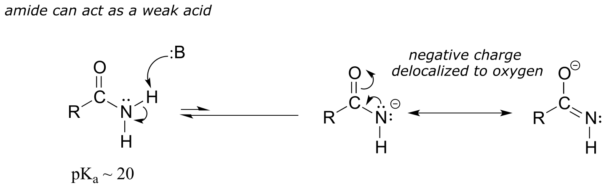
fig 38
Next, let’s consider the basicity of some other nitrogen-containing functional groups.
7.5A: Anilines#
Aniline, the amine analog of phenol, is substantially less basic than an amine.

fig 39
We can use the same reasoning that we used when comparing the acidity of a phenol to that of an alcohol. In aniline, the lone pair on the nitrogen atom is stabilized by resonance with the aromatic π system, making it less available for bonding and thus less basic.
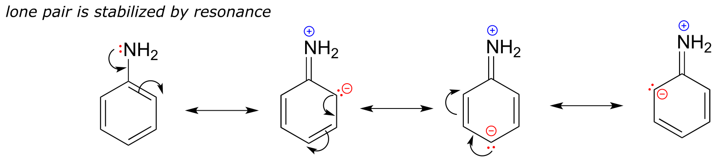
fig 40
Exercise 7.20: With anilines just as with phenols, the resonance effect of the aromatic ring can be accentuated by the addition of an electron-withdrawing group, and diminished by the addition of an electron-donating group. Which of the two compounds below is expected to be more basic? Use resonance drawings to explain your reasoning.

7.5B: Imines#
Imines are somewhat less basic than amines: pKa for a protonated imine is in the neighborhood of 5-7, compared to ~10 for protonated amines. Recall that an imine functional group is characterized by an sp2-hybridized nitrogen double-bonded to a carbon.

fig 41
The lower basicity of imines compared to amines can be explained in the following way:
The lone pair electrons on an imine nitrogen occupy an sp2 hybrid orbital, while the lone pair electrons on an amine nitrogen occupy an sp3 hybrid orbital.
sp2 orbitals are composed of one part s and two parts p atomic orbitals, meaning that they have about 33% s character. sp3 orbitals, conversely, are only 25% s character (one part s, three parts p).
An s atomic orbital holds electrons closer to the nucleus than a p orbital, thus s orbitals are more electronegative than p orbitals. Therefore, sp2 hybrid orbitals, with their higher s-character, are more electronegative than sp3 hybrid orbitals.
Lone pair electrons in the more electronegative sp2 hybrid orbitals of an imine are held more tightly to the nitrogen nucleus, and are therefore less ‘free’ to break away and form a bond to a proton - in other words, they are less basic.
The aromatic compound pyridine, with an imine nitrogen, has a pKa of 5.3. Recall from section 2.2C that the lone pair electrons on the nitrogen atom of pyridine occupy an sp2-hybrid orbital, and are not part of the aromatic sextet - thus, they are available for bonding with a proton.

fig 42
7.5C: Pyrrole#
In the aromatic ring of pyrrole, the nitrogen lone pair electrons are part of the aromatic sextet, and are therefore much less available for forming a new bonding to a proton. Pyrrole is a very weak base: the conjugate acid is a strong acid with a pKa of 0.4.

fig 43
Below is a summary of the five common bonding arrangements for nitrogen and their relative basicity:
nitrogen group |
structure |
pKa of conjugate acid |
|---|---|---|
amide |
<img src=”media/image585.png” |
style="width:0.77778in;height:0.77778in" /> | NA (amide nitrogens are not basic) |
| amine | 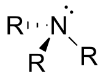 | ~ 10 |
| imine | 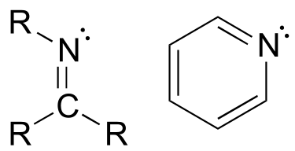 | ~ 5 - 7 |
| aniline |  | ~ 5 |
| pyrrole | 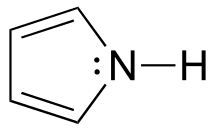 | ~ 0 |
| ~ 5 |
| pyrrole | 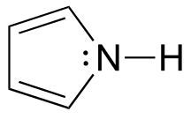 | ~ 0 |
fig 44
Learning and being able to recognize these five different ‘types’ of nitrogen can be very helpful in making predictions about the reactivity of a great variety of nitrogen-containing biomolecules. The side chain of the amino acid tryptophan, for example, contains a non-basic ‘pyrrole-like’ nitrogen (the lone pair electrons are part of the 10-electron aromatic system), and the peptide chain nitrogen, of course, is an amide. The nucleotide base adenine contains three types of nitrogen.
.

fig 45
The side chain on a histidine amino acid has both a ‘pyrrole-like’ nitrogen and an imine nitrogen. The pKa of a protonated histidine residue is approximately 7, meaning that histidine will be present in both protonated and deprotonated forms in physiological buffer. Histidine residues in the active site of enzymes are common proton donor-acceptor groups in biochemical reactions.
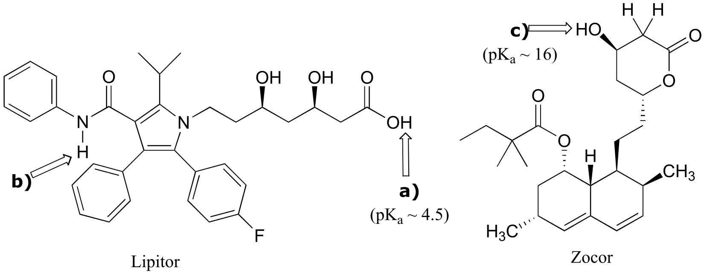
fig 46
Exercise 7.21: Below are the structures of four ‘coenzyme’ molecules necessary for human metabolism (we will study the function of all of these in chapter 17).
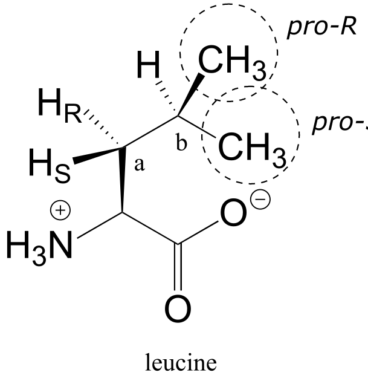fig 47
a) When appropriate, assign a label to each nitrogen atom using the basicity classifications defined in this section (‘pyrrole-like’, etc.).
b) There is one nitrogen that does not fall into any of these types - is it basic? Why or why not? What would be a good two-word term to describe the group containing this nitrogen?
Section 7.6: Carbon acids#
So far, we have limited our discussion of acidity and basicity to heteroatom acids, where the acidic proton is bound to an oxygen, nitrogen, sulfur, or halogen. However, carbon acids - in which the proton to be donated is bonded to a carbon atom - play an integral role in biochemistry.
7.6A: The acidity of α-protons#
A hydrogen on an alkane is not at all acidic – its pKa is somewhere on the order of 50, about as non-acidic as it gets in the organic chemistry world. The reason for this is that if the hydrogen were to be abstracted, the electrons from the broken bond would be localized on a single carbon atom.

fig 48
Because carbon is not electronegative and is terrible at holding a negative charge, such carbanion species are extremely unstable.
How, then, can a proton bonded to a carbon be acidic? Remember that an acid becomes stronger if the conjugate base is stabilized, an in particular if the negative charge on the conjugate base can be delocalized to an electronegative atom such as an oxygen. This is possible when a carbon is located adjacent to a carbonyl group. Consider, for example, the conjugate base of acetone.

fig 49
One resonance contributor puts the negative charge on the carbon #1. Due to the presence of the adjacent carbonyl group, however, a second resonance contributor can be drawn in which the negative charge is located on the carbonyl oxygen, where it is much more stable. This type of stabilized carbanion species is specifically referred to as an enolate. Acetone is in fact weakly acidic, with a pKa of about 19. The importance of the position of the carbonyl group is evident when we consider 2-butanone: here, the protons on carbons #1 and #3 are somewhat acidic (in the neighborhood of pKa = 20), but the protons on carbon #4 are not acidic at all, because carbon #4 is not adjacent to the carbonyl.

fig 50
A carbon that is located next to a carbonyl group is referred to as an α-carbon, and any proton bound to it is an α-proton. In 2-butanone, carbons #1 and #3 are α-carbons, and their five protons are α-protons. Carbon #4 is a β-carbon, as it is two positions removed from the carbonyl carbon
An active methylene is a carbon in the α position relative to two carbonyl groups rather than just one. Protons on active methylene carbons are more acidic than other α-protons, because the charge on the conjugate base can be localized to two different oxygen atoms, not just one. This keto-ester compound, for example, has a pKa of approximately 11, close to that of phenol.

fig 51
As we alluded to above, the acidity of α-protons is an extremely important concept in biological organic chemistry. Look through a biochemistry textbook, and you will see reaction after reaction in which the first mechanistic step is the abstraction of an α-proton to form an enolate intermediate. Two chapters in this book (chapters 12 and 13) are devoted to such reactions, and the initial proton-extraction step of three example reactions are previewed below. Reaction A is from fatty acid oxidation, while reactions B and C are both part of carbohydrate metabolism.
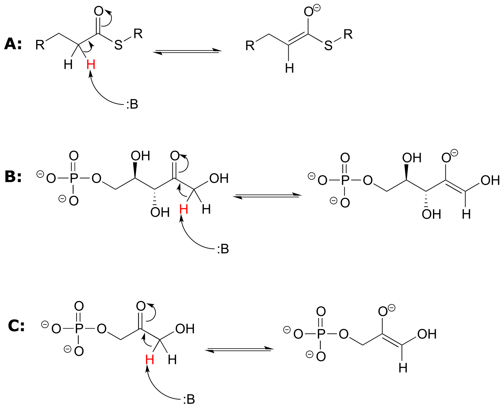
fig 52
Exercise 7.22: For each molecule shown below,
a) Show the location of all α-protons.
b) Draw the structure(s) of all possible enolate conjugate bases.

fig 53
7.6B: Keto-enol tautomers#
An enolate ion can, of course, be reprotonated at the α-carbon to return the molecule to the ketone or aldehyde form. An alternate possibility is that the oxygen atom, rather than the α-carbon, could be protonated. The species that results from this step is referred to as an enol (this term reflects the fact that an enol contains structural elements of both an aklene and an alcohol).

fig53c
In fact, most ketones and aldehydes exist in rapid equilibrium with their enol form. A ketone/aldehyde and its corresponding enol are tautomers: a pair of constitutional isomers which can be rapidly and reversibly interconverted, and which vary in terms of the site of protonation and location of a double bond. As we will see going forward, tautomerization - the interconversion of two tautomers - is a ubiquitous step in biological organic chemistry. Often, when discussing tautomerization, the ketone (or aldehyde) isomer is referred as the keto form.
As a general rule, the keto form is lower in energy than the corresponding enol form, and thus the keto form predominates at equilibrium. Acetone, for example, is present at >99% keto form at equilibrium, and the enol form at less than 1%.
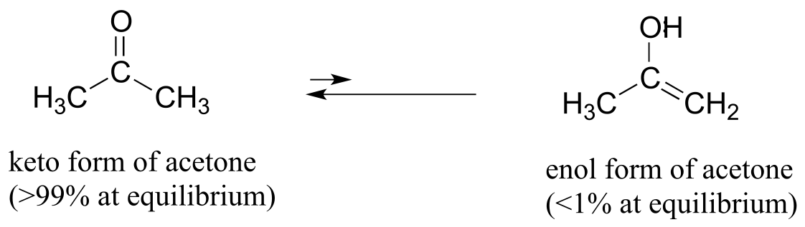fig 53e
The ‘driving force’ for the enol to keto conversion can be understood in terms of the energies of the three bonds involved in the process: the sum of the three bond energies is about 48 kJ/mol greater in the keto form than in the enol form.
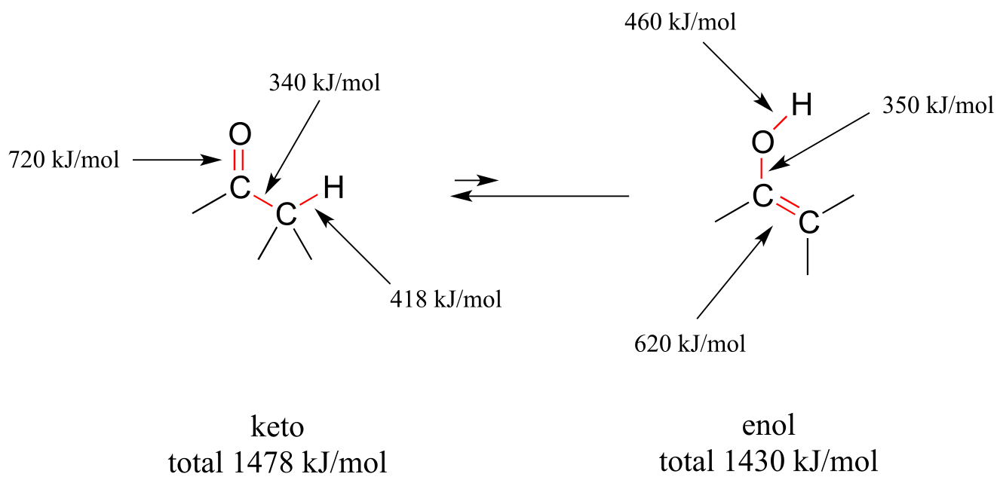
fig 53d
Exercise 7.23: Draw all of the possible enol forms of the following aldehydes/ketones.
a) 3-pentanone
b) acetaldehyde (IUPAC name ethaldehyde)
c) cyclohexanone
d) 2-pentanone
Exercise 7.24: Draw three examples of aldehyde or ketone compounds for which there is no possible enol form.
Exercise 7.25: In some special cases, the enol form of a compound is more stable than the keto form and thus predominates at equilibrium. Curcumin is the compound mainly responsible for the characteristic yellowish color of tumeric, a ubiquitous spice in south/southeast asian cuisine. The extended system of π bonds present in the enol form causes it to be lower in energy than the tautomer in which there are two ketone groups (called the diketo form). Draw the diketo form of curcumin, and explain how the conjugated π system is disrupted.
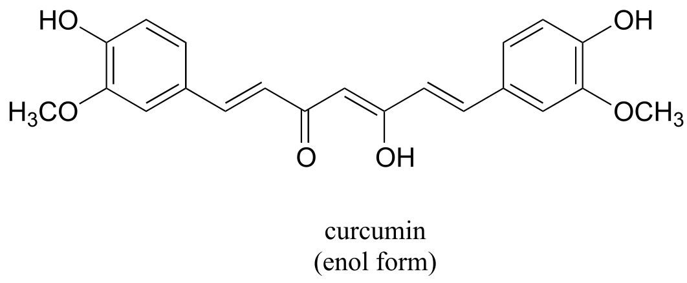
fig 53a
Exercise 7.26: The phenol functional group can also be thought of a kind of enol.
a) Draw the ‘keto’ form of phenol.
b) The ‘keto’ form of phenol is highly disfavored compared to the ‘enol’ form - why?
Keto-enol tautomerization steps can be found in many biochemical reactions. For example, there is an enol to keto tautomerization step in the glycolysis reaction catalyzed by pyruvate kinase (EC 2.7.1.40). Shown below is just the tautomerization part of this reaction; we will see the complete reaction in chapter 9.

fig 53b
7.6C: Imine-enamine tautomers#
Another common tautomeric relationship in biological organic chemistry is the equilibrium between imines (also known as Schiff bases) and enamines, which are essentially the nitrogen equivalents of enols.
Mechanism for imine - enamine tautomerization
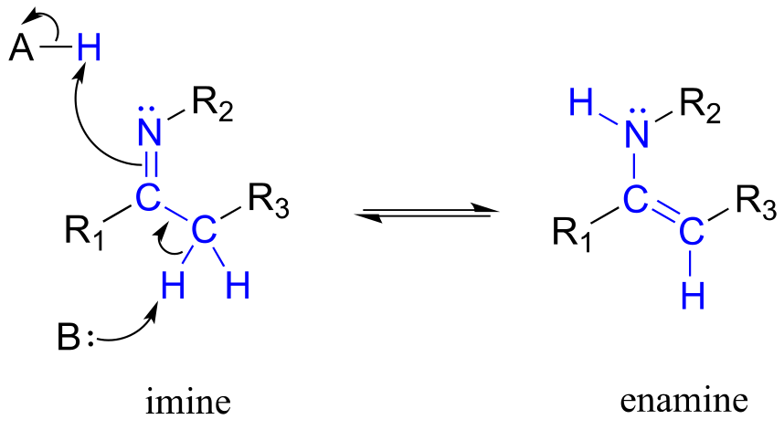
fig 54a
The degradation of serine, for example, involves an enamine to imine tautomerization step: (EC 4.2.1.13)
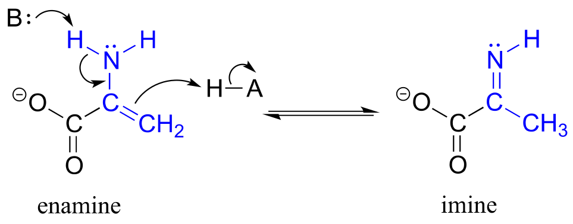
fig 54b
Exercise 7.27: The structures below all contain either an imine or an enamine group. For each, draw the structure of an alternate tautomer.

fig 54c
7.6D: Acidity of terminal alkynes#
Terminal alkynes are another kind of carbon acid which are relevant more to laboratory organic chemistry than to biological chemistry.
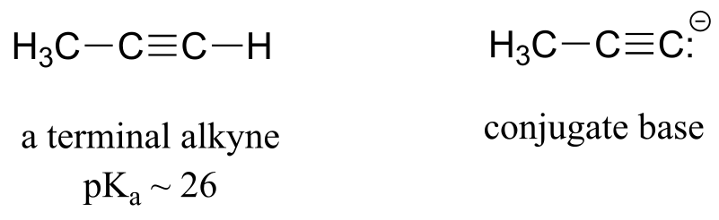
fig 54
Terminal alkynes are more acidic than alkenes or alkanes for the same reason that protonated imines are more acidic than protonated amines: the alkyne carbon is sp-hybridized, meaning that it has 50% s-orbital character and is therefore more electronegative. With a pKa of approximately 26, alkynes are only weakly acidic, but nonetheless can be fully deprotonated through the use of a strong base such as sodium amide (NaNH2).
Exercise 7.28: Hydrogen cyanide, HCN, is another example of a relatively strong carbon acid, with a pKa of 9.2. Suggest a rationale for the acidity of this proton.
Section 7.7: Polyprotic acids#
Polyprotic acids are capable of donating more than one proton. The most important polyprotic acid group from a biological standpoint is triprotic phosphoric acid. Because phosphoric acid has three acidic protons, it also has three pKa values.

fig 55
The pKa values for any polyprotic acid always get progressively higher, because it becomes increasingly difficult to stabilize the additional electron density that results from each successive proton donation. H3PO4 is a strong acid because the (single) negative charge on its conjugate base H2PO4- can be delocalized over two oxygen atoms.
H2PO4- is substantially less acidic, because proton donation now results in the formation of an additional negative charge: a –2 charge is inherently higher in energy than a –1 charge because of negative-negative electrostatic repulsion. The third deprotonation, resulting in formation of a third negative charge, has an even higher pKa. We will have more to say about the acidity of phosphate groups in chapter 9, when we study the reactions of phosphate groups on biomolecules.
Exercise 7.29: In a buffer at physiological pH, what form(s) of phosphoric acid predominate? What is the average net charge?
Free amino acids are polyprotic, with pKa values of approximately 2 for the carboxylic acid group and 9-10 for the ammonium group. Alanine, for example, has the acid constants pKa1 = 2.3 and pKa2 = 9.9.

fig 56
The Henderson-Hasselbalch equation tells us that alanine is almost fully protonated and positively charged when dissolved in a solution that is buffered to pH 0.5. At pH 7, alanine has lost one proton from the carboxylic acid group, and thus is a zwitterion (it has both a negative and a positive formal charge). At pH levels above 12, the ammonium group is fully deprotonated, and alanine has a negative overall charge.
Some amino acids (arginine, lysine, aspartate, glutamate, tyrosine, and histidine) are triprotic, with a third pKa value associated with an ionizable functional group on the side chain.
Many biological organic molecules have several potentially ionizable functional groups and thus can be considered polyprotic acids. Citric acid, found in abundance in oranges, lemons, and other citrus fruits, has three carboxylic acid groups and pKa values of 3.1, 4.8, and 6.4.
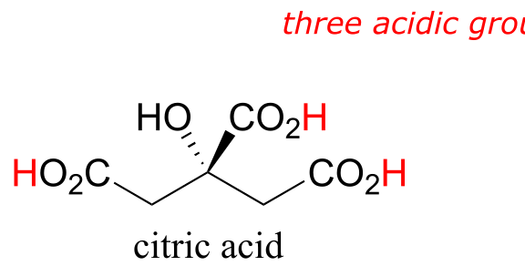
Section 7.8: Effects of enzyme microenvironment on acidity and basicity#
Virtually all biochemical reactions take place inside the active site pocket of an enzyme, rather than free in aqueous solution. The microenvironment inside an enzyme’s active site can often be very different from the environment outside in the aqueous solvent. Consider, for example, the side chain carboxylate on an aspartate residue in an enzyme. The literature pKa of this carboxylic acid group is listed as 3.9, but this estimate assumes that the group is positioned on the surface of the protein, exposed to water. In the physiological buffer of pH ~ 7, a carboxylic acid group with pKa = 3.9 will be fully deprotonated and negatively charged. If, however, an aspartate side chain happens to be buried deep inside the interior of the protein’s active site, and is surrounded primarily by nonpolar side chains such as alanine, phenylalanine, tryptophan, etc., the situation is very different.
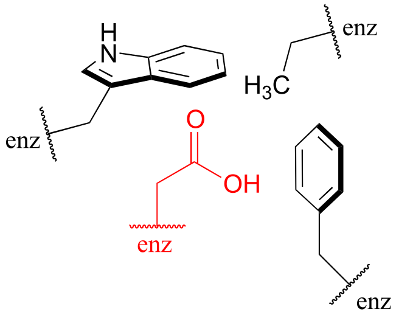
fig 59
Cut off from the environment of the bulk solvent, the carboxylate group (red in the above figure) is now in a very nonpolar microenvironment, a situation in which the protonated, uncharged state is stabilized relative to the deprotonated, negatively charged state (this is simply another application of the ‘like dissolves like’ principle you learned in General Chemistry - a charged group is highly destabilized by a nonpolar environment). The overall effect is that the pKa for this aspartate residue is actually higher than 3.9 – it is less acidic, and more likely to be in its protonated form inside the protein.
A similar effect would be observed in a situation where the side chain carboxylate groups of two aspartate residues are located in close proximity to one another in an enzyme active site. Two negatively charged groups close to each other represents a very high energy, repulsive situation, and this can be relieved if one of the two side chains is protonated.

fig 60
In this microenvironment, the proximity of one amino acid group directly effects the pKa of its neighbor.
Now consider a situation where a metal ion such as magnesium (Mg+2) or zinc (Zn+2) is bound in the interior of the enzyme, in close contact with an aspartate side chain. With a cation to interact with, the anionic, deprotonated state of the amino acid is stabilized, so the pKa of this Asp residue is likely to be substantially lower than 3.9.

fig 61
The metal ion in this situation is considered to be acting as a Lewis acid, accepting electron density from the carboxylate group.
The pKa-lowering effect of a metal cation can be dramatic – it has been estimated that a water molecule coordinated to a Cu+2 or Zn+2 ion can have a pKa as low as 7 (compare this to the ‘normal’ water pKa of 15.7!) (J. Am. Chem. Soc. 1984, 106, 630.)
Exercise 7.30: A lysine residue located deep in the interior of a protein is surrounded by nonpolar residues. In what direction will this alter the ‘normal’ pKa of the lysine side chain, and why?
Exercise 7.31: In many biochemical reactions which involve the formation of an enolate intermediate, the carbonyl oxygen of the substrate is coordinated to a divalent metal ion (usually zinc or magnesium) in the active site. Explain, with structural drawings, how this ion-dipole interaction effects the acidity of the α-protons of dihydroxyacetone phosphate (DHAP), an intermediate compound in the glycolysis pathway.

fig 62
Video tutorials: organic acid-base
chemistry~~
~~Summary of key concepts
Before you move on to the next chapter, you should:
Know the Bronsted-Lowry definition of acidity and basicity: a Bronsted acid is a proton donor, a Bronsted base is a proton acceptor.
Know the Lewis definition of acidity and basicity: a Lewis acid is an electron acceptor, a Lewis base is an electron donor.
Understand that the Lewis definition is broader: all Bronsted acids are also Lewis acids, but not all Lewis acids are also Bronsted acids.
Be able to draw a curved arrow mechanism for both Bronsted and Lewis acid-base reactions.
Know the expressions for Ka and pKa.
Commit to memory the approximate pKa values for the following functional groups:
H3O+, protonated alcohol, protonated carbonyl (~ 0)
carboxylic acids (~ 5)
imines (~ 7)
protonated amines, phenols, thiols (~ 10)
water, alcohols (~ 15)
α-carbon acids (~ 20)
Be able to use pKa values to compare acidity: a lower pKa corresponds to a stronger acid.
Know that:
For a given pair of acids, the stronger acid will have the weaker conjugate base.
For a given pair of basic compounds, the stronger base will have the weaker conjugate acid.
Be able to identify the most acidic/basic groups on a polyfunctional molecule.
Be able to calculate the equilibrium constant of an acid base equation from the pKa values of the acids on either side of the equation.
Be able to use the Henderson-Hasselbalch equation to determine the protonation state/charge of an organic compound in an aqueous buffer of a given pH.
Understand the idea that the best way to compare the strength of two acids is to compare the stability of their conjugate bases: the more stable (weaker) the conjugate base, the stronger the acid.
Be able to compare the acidity or basicity of compounds based on periodic trends:
acidity increases left to right on the table, so alcohols are more acidic than amines
acidity increases top to bottom on the table, so a thiol is more acidic than an alcohol.
Be able to compare the acidity or basicity of compounds based on protonation state: H3O+ is more acidic than H2O, NH4+ is more acidic than NH3.
Understand how the inductive effect exerted by electronegative groups influences acidity.
Understand how resonance delocalization of electron density influences acidity.
Be able to explain/predict how orbital hybridization affects the relative acidity of terminal alkynes, alkenes, and alkanes.
Be able to explain why phenols are more acidic than alcohols, and how electron-withdrawing or donating groups influence the acidity of phenols.
Be able to identify the relative basicity of a nitrogen-containg group in a compound, based on whether it is an amine, amide, imine, aniline, or ‘pyrrole-like’.
Be able to identify α-carbon(s) on a carbonyl compound, and explain why α−protons are weakly acidic. You should be able to draw the enolate conjugate base of a carbonyl compound.
Be able to identify tautomeric relationships, specifically keto-enol and imine-enamine tautomers.
Understand what a polyprotic acid is, what is meant by multiple pKa values, and why these values get progressively higher.
~~
~~
Problems#
P7.1: For each pair of molecules below, choose the stronger acid, and explain your choice.


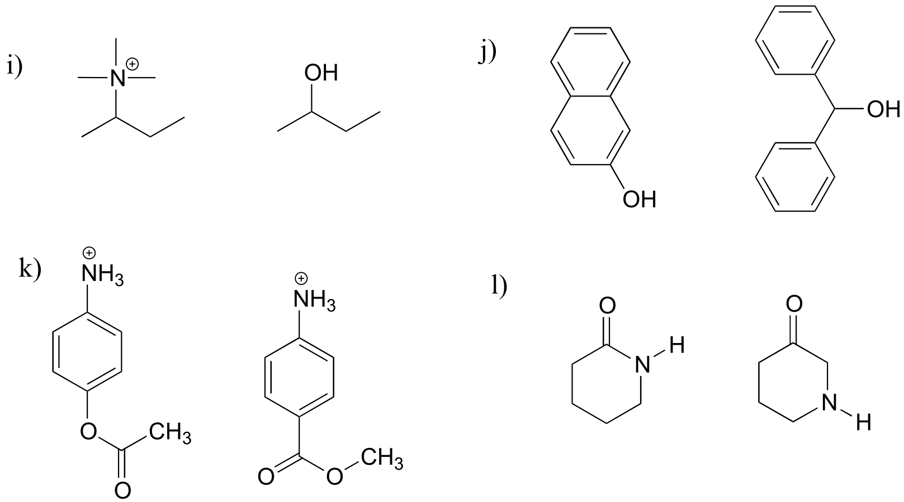
P7.2: For each pair of molecules below, choose the stronger base, and explain your choice.


P7.3: Below are the structures of some well-known drugs.
a) What is the most acidic proton on Lipitor? What is its approximate
pKa value?
(Lipitor is a brand name for atorvastatin, a cholesterol-lowering drug.)
b) What is the most acidic proton on Zocor? What is its approximate pKa value?
(Zocor is a brand name for simvastatin, a cholesterol-lowering drug.)
c) Where is the most basic site on Plavix? What is the approximate pKa value of the conjugate acid? (Plavix is a brand name for clopidogrel, a drug to prevent blood clots after a stroke.)
d) Identify the most acidic proton on methadone, and draw the conjugate base that would form if this proton were abstracted by a base. (Methadone is an opiate used in the treatment of heroin addiction.)
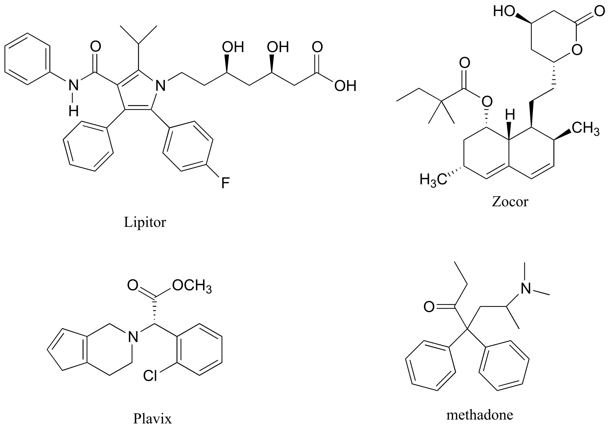
P7.4:
a) Porphobilinogen is a precuror to the biosynthesis of chlorophyll and many other biological molecules. Draw the form of the molecule with a +1 net charge. What would the net charge of the molecule be at physiological pH?

b) Look up the structures of the hormones adrenaline and estrogen (estrone). Estrogen can diffuse across a cell membrane, while adrenaline cannot. Use your knowledge of cell membranes, physical properties of organic molecules, and acid-base chemistry to explain this observation.
P7.5: Classify each of the nitrogen atoms in the coenzyme S-adenosylmethionine as an amine, amide, ‘aniline-like’, ‘pyridine-like’, or ‘pyrrole-like’. Which nitrogen is most basic? Which is least basic?

P7.6: Uric acid, an intermediate in the catabolism (breakdown) of the nucleotide adenosine, has four protons. Which would you expect to be the least acidic? Use resonance structures to explain your reasoning. Hint: consider protons 1-4 in turn, and what the conjugate base would look like if each proton were donated to a base: how well could the resulting negative charge be stabilized by resonance?

P7.7: Estimate the net charge on a peptide with the sequence P-E-P-T-I-D-E (single-letter amino acid code), when it is dissolved in a buffer with pH = 7 (don’t forget to consider the terminal amino and carboxylate groups).
P7.8: Estimate the net charge on a dipeptide of sequence D-I.
a) in a buffer with pH = 4.0
b) in a buffer with pH = 7.3
c) in a buffer with pH = 9.6
P7.9: Show the structures of species X and Y in the following acid-base reactions, and estimate the value of Keq using the pKa table. Assume that reactions involve equimolar amounts of acid and base.

P7.10: Locate the most basic site on the structure of the hallucinogenic drug known as LSD.

P7.11:
a) Identify the most acidic proton on the antibiotic tetracycline, and explain your choice.
b) Identify two additional protons which would be expected to have pKa values close to 5.

P7.12: In an enzyme active site, a lysine side chain is surrounded by phenylalanine, alanine, tryptophan, and leucine residues. Another lysine side chain is located on the surface of the protein, pointing out into the surrounding water. Which residue has the higher pKa, and why?
P7.13: (a-d) How would the immediate proximity of a magnesium ion affect the pKa of the side chains of the following amino acids (relative to the ‘typical’ pKa values given in the text)? Assume that all residues are located in the interior of the protein structure, not in direct contact with the outside buffer solution.
a) a glutamate residue?
b) a lysine residue?
c) a histidine residue?
d) a tyrosine residue?
e) How would contact with a magnesium ion effect the pKa of a bound water molecule in the interior of a protein?
P7.14: The side chain of lysine has a pKa of approximately 10.5, while the pKa of the arginine side chain is approximately 12.5. Use resonance structures to rationalize this difference.
P7.15: The α-protons of ketones are, in general, significantly more acidic than those of esters. Account for this observation using structural arguments.
P7.16: 2-amino-2-hydroxymethylpropane-1,3-diol, (commonly known as ‘Tris’) and imidazole are very commonly used as buffers in biochemistry and molecular biology laboratories. You make two buffer solutions: One is 50 mM Tris at pH 7.0, the other 50 mM imidazole/imidazolium at pH 7.0 For each solution, calculate the concentration of buffer molecules in the cationic protonation state.
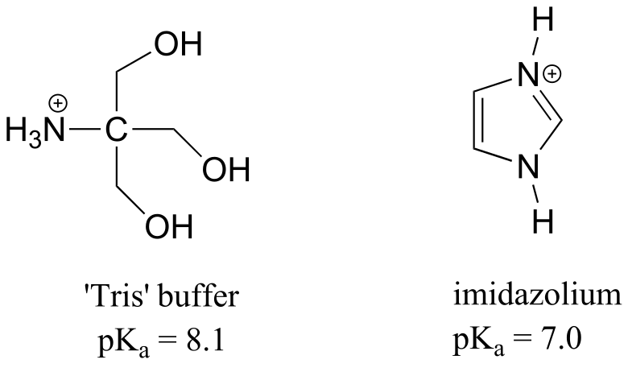
P7.17: The compound pictured below is an unusual carbon acid (pKa ~ 16) that does not contain any heteroatoms. Explain why it is so much more acidic than other hydrocarbons.